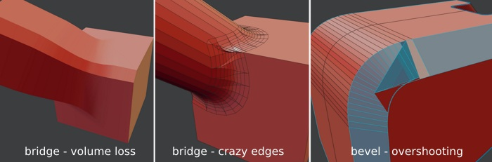
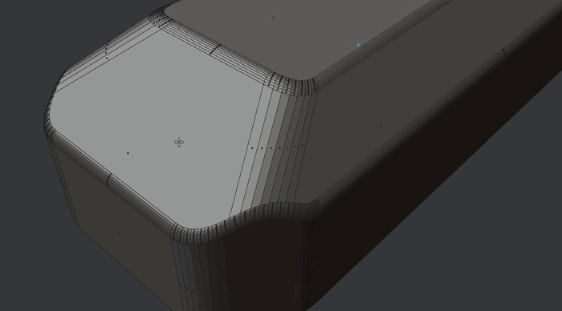

What is MESHmachine?
Gumroad | Blender Market - BlenderArtists - Youtube - Twitter - Facebook - eMail
cover image based on Humanoid Mecha concept by Bruno Gauthier Leblanc
MESHmachine is a blender mesh modeling addon with a focus on hard surface work without subdivision surfaces.
MESHmachine's chamfer and fillet toolset allows for more flexibility, when dealing with fillet-like surfaces, traditionally created with the Bevel and Bridge tools.
MESHmachine's approach to fillets is the Fuse tool, which builds transitional surfaces from chamfers, fusing the surfaces on both sides.
Doing this, you get the benefits of both - chamfers and fillets - while avoiding their disadvantages.
Read on below for an overview of MESHmachine's tools and ideas.
Resources
Attention
If you need to get in touch with me to report an error, report tool misbehavior or have another problem READ THIS FIRST.
For installation help, see the Installation page.
For questions you have or problems you may run into, see the FAQ.
To discuss using MESHmachine, please use the blender artists and polycount threads.
To learn about all of MESHmachine's features and tools, you can either check out this playlist on youtube, or better - access the same videos through the sidebar to the left.
Features
- turn chamfers into fillets/bevels and back
- change the width of a chamfer or bevel
- create variable fillets and washouts
- unbevel and unchamfer to go back to a hard edge
- practically edit existing existing bevels
- resolve tricky geometry overlaps in cases where two bevels meet
- flatten polygons based on another polygon or flatten a polygon based on 3 vertices
- flatten along a normal or flatten along edges
- redirect chamfer flow by turning the corners
- convert triangular bevel corners into quad corners
- plug details into your mesh
- build your own plugs and create/buy/sell plug libraries
- cleanup booleans and create clean perimeter loops around their intersections
- stash backups and objects referenced by other tools, without cluttering the scene
- create and manipulate custom normals
- mirror and symmetrize custom normals
Overview
Chamfers
Chamfers (flat bevels) are easy to create, easy to manipulate and are easy to (loop) select.
They are very useful to quickly block out more complex forms and already contain all the important information in regards to the flow of surfaces and edges as well as the chamfer width.
Chamfers are also a dead end, if you want to further refine them later on, unless you get down to the edge or vertex level, which is time consuming.
Traditionally, they can't be easily turned into fillets(rounded bevels) and removing the chamfer polygons to bridge the open edge loops, bedides being tedious, often produces results without good surface continuity or with unnessesary edges.
 The overshooting is relatively easy to fix, IF you actually want to create a chamfer, but gets harder (support edges), if you want a rounded bevel. So, what if you could turn a chamfer into a bevel?
Fillets
Fillets (round bevels) are also easy to create, using Blender's Bevel tool. But once created, they are hard or downright impossible to manipulate. Depending on the density, they are also significantly harder to select.
Fillets are excellent for refined, finished forms however, but due to how hard they are to manipulate, using them early on usually means you are locking the design down. Changing it later becomes so hard, you're likely to deny yourself that option completely.
As a result your design may suffer.
Fuse
Using MESHmachine's Fuse and Unfuse tools, you can move between chamfers and fillets back and forth effortlessly - you can turn a chamfer into a fillet and a fillet back into a chamfer.
This allows for significant gains in flexibility, because - remember - a chamfer is trivial to manipulate and once you've done so, you can turn it into a Fillet again.
Moreover, the width of a chamfer will directly determine the width of a fillet(the radius if you want, but it's not precisly circular and depends on the tension setting).
This in turn allows for the creation of variable fillets and even washouts, which are impossible to do with the bevel tool and modifier.
 tasks like these are usually pretty tedious, but are rather trivial with MESHmachine
Plugs

Plugs are mesh inserts, that in combination with normal transfers, can produce flawless detailing, even on curved surfaces and even on medium or low density models. MESHmachine provides tools to manage plug libraries and tools to create your own plugs well.
Boolean Helpers
MESHmachine provides a few tools, that are helpful after boolean operations.
Boolean Cleanup merges vertices on the transitional edge between two boolean operators.
The Chamfer and Offset tools help to create clean boundary topology, which in turn is beneficial for tools like Change Width and Refuse.
Stashes
MESHmachine introduced the concept of Stashes, which are basically object backups, that can be referenced by other tools, like Conform, or by modifiers.
What's special about them, is that they don't clutter the scene and instead are accessed or brought back using a modal stash viewer or conveniently by the tools that reference them directly.
Normal Tools
In addition to modeling tools, MESHmachine has so far added 4 tools to manipulate vertex normals.
Traditionally used in game art, if at all, this makes custom normals accessible in medium and high resolution mesh modeling as well and further loosens topology constraints in non-subd modeling.
The Normal Transfer tool in combination with stashes, mirrors behavior of parametric solids and nurbs modelers and can produce the same quality in terms of shading.
Mirroring
Utilizing custom normals, required additional work on the mirroring front, as neither Blender's symmetrize tool, nor the mirror modifier supports custom normals.
MESHmachine's Symmetrize adds those missing normal mirror capabilities.
As for the mirror modifier, MESHmachine's Real Mirror will create real geometry with proper origins and custom normals from objects carrying mirror mods. This also enables correct object space texturing for geometry that needs to be mirrored.
Selection
VSelect provides a quick, visual way to select geometry stored in vertex groups. This is especially useful in combination with Plugs and Normal Transfers.
Looptools
Looptools is a favourite addon of many blender users and ships with blender's default set of addons.
If activated, MESHmachine will provide modal wrappers, so Looptools' Circle and Relax can be used in the same fashion as MESHmachine's tools.
Grease Pencil
The Tape tool adressess a weakness of Blender's grease pencil line tool, and allows you to draw straight lines projected on curved surfaces.